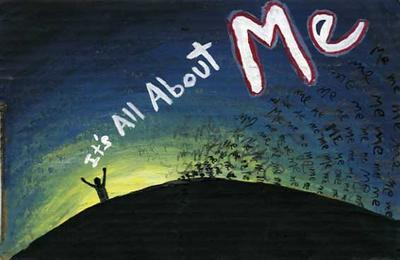
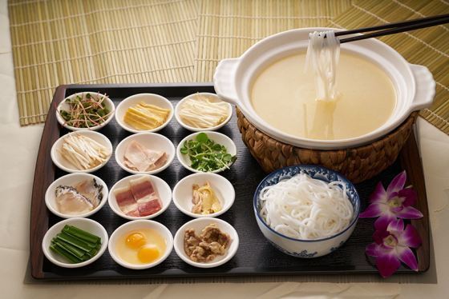
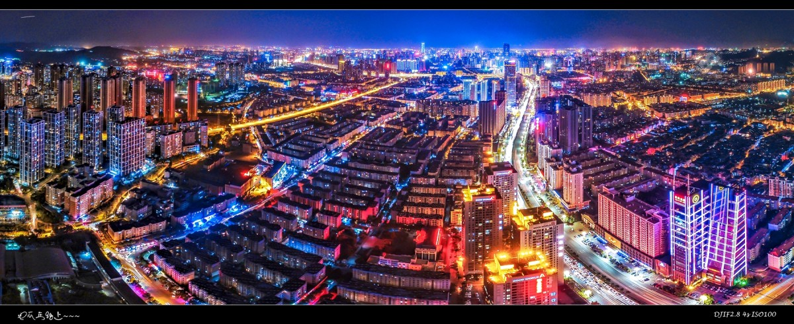

This is my About page
 
My name is Brandon liao , I am form southern of China , KUNMING. KUNMING is the capital of beautiful YUNNAN, Celebrated as the " Spring City, " Kunming has neither severe winters nor extremely hot summers and can be visited at any time of the year. The most fabulous of all Yunnan food is Yunnan rice noodles (Guoqiao mixian, literally "Crossing the bridge rice noodles"). With its high humidity and mild temperatures Kunming provides abundant fruits and vegetables all year for local cuisine. In addition, there are numerous snack options in high streets and back lanes. You can find good places and restaurants to eat in Kunming during your Kunming tour.
